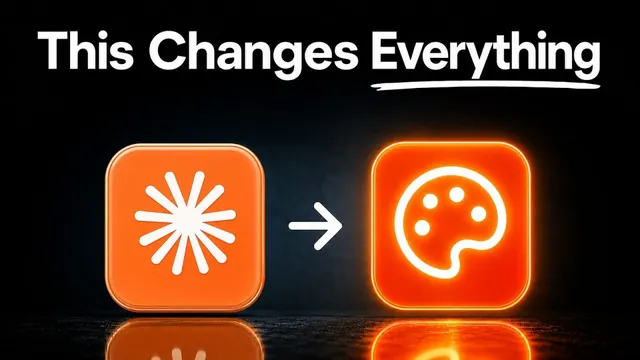

클로드 디자인, 단계별로 전부 설명

원본 영상 보기 →
- 참고 이미지와 반복 피드백이 결과물 질을 가른다
- 디자인 시스템을 한 번 굳히면 사업 전체에 복제된다
- 클로드만으로는 한계가 있고, 외부 생성 도구와 Supabase 연결이 최종 완성도를 결정한다
한 줄 요약
클로드 디자인(Claude design)을 아무 지시 없이 쓰는 초보 단계부터, 디자인 시스템을 만들어 사업 전체에 복제하고, 외부 이미지·영상 생성 도구와 Supabase까지 결합해 실제로 작동하는 앱을 완성하는 단계까지, 잭 로버츠(Jack Roberts)가 7단계로 정리한 영상.
전체 내용 정리
레벨 1, 아무 지시 없이 던져도 나쁘지 않은 결과가 나온다
클로드 디자인은 claude.ai 왼쪽 하단의 디자인(Design) 버튼을 누르면 시작할 수 있다. 레벨 1 사용자는 "티셔츠 회사 UI 목업을 만들어줘" 같은 짧은 프롬프트만 던지고, 모델과 강도(effort)를 고른 뒤 바로 실행한다. 이렇게만 써도 대부분의 사람보다 앞서 있다는 게 요지인데, 클로드 디자인의 존재 자체를 모르는 사람이 압도적으로 많기 때문이다. 다만 같은 시스템과 같은 프롬프트를 쓰면 다들 비슷비슷한 보라색 그라디언트 결과물을 받게 된다는 한계가 있다. 이 한계를 넘으려면 얼마나 구체적으로 지시하느냐가 관건이라는 게 레벨 2로 넘어가는 이유다.
레벨 2, 진짜 디자이너처럼 브리핑하고 참고 이미지를 붙이면 결과가 달라진다
레벨 2는 클로드를 디자인 디렉터처럼 대하는 단계다. "습관 추적 앱을 노션처럼 예쁘게 만들어줘" 식의 막연한 요청 대신, Pinterest·Awwwards·Godly·Mobbin·Land-book 같은 사이트에서 마음에 드는 디자인을 스크린샷으로 캡처해 참고 이미지로 첨부한다. 참고 이미지 없이 받은 결과와 이미지를 붙여서 받은 결과를 비교하면 완성도 차이가 뚜렷하다. 레벨 2의 또 다른 핵심은 한 번에 끝내지 않는 것이다. "버튼을 다 선택하면 색종이가 터지게 해줘", "화면마다 상단 색을 노랑·파랑·초록으로 다르게 해줘" 같은 후속 피드백을 계속 주고받으며 다듬어야 한다.
레벨 3, 한 번 만든 스타일을 재사용 가능한 디자인 시스템으로 굳힌다
레벨 3은 매번 새로 만드는 대신 하나의 일관된 디자인 시스템을 구축하는 단계다. 방법은 마음에 드는 결과물을 공유(Share) 메뉴에서 project.html로 프로젝트 아카이브를 다운로드한 뒤, 홈 화면의 "디자인 시스템 만들기(create a design system)"에 그 파일을 업로드하고 생성(generate)을 누르는 것이다. 이 과정에서 로고, 타이포그래피, 컬러 팔레트를 함께 넣을 수 있고, 무료 도구 coolors.co로 색상 팔레트를 뽑아 활용할 수도 있다. 이렇게 나온 디자인 시스템에는 소스, 콘텐츠 기본값, 비주얼 변환, 손그림 마크까지 포함돼 있고, 완성 후에는 다시 project.html로 내려받아 컴퓨터에 별도로 보관해둔다.
레벨 4, 하나의 디자인 시스템을 이메일부터 슬라이드까지 사업 전체에 복제한다
레벨 4는 만들어둔 디자인 시스템을 이메일, 프레젠테이션, 슬라이드 덱 등 사업의 모든 산출물에 적용하는 단계다. 저장된 디자인 시스템을 불러와 "생산성에 관한 슬라이드 덱을 만들어줘", "웰컴 이메일을 디자인해줘" 같은 요청을 하면 컬러와 스타일이 일관되게 반영된 결과가 한 번에 나온다. 여기서도 이터레이션이 핵심이라 "슬라이드마다 색상 높이를 통일해줘", "문장은 두 줄을 넘기지 말아줘" 같은 피드백을 5~10차례 주고받는 걸 두려워하지 말라고 조언한다. 실제로 이메일 시퀀스 디자인에만 4천 달러를 썼던 과거 경험과 비교하면, 이 단계부터는 같은 품질을 훨씬 적은 비용으로 반복 생산할 수 있게 된다.
레벨 5~6, 외부 이미지·영상 생성 도구와 모션으로 브랜드에 고유한 생명력을 더한다
레벨 5는 클로드 디자인의 한계, 즉 본 것만 따라 그린다는 한계를 이미지·영상 생성 도구로 보완하는 단계다. Higgsfield 같은 툴에서 Nana Banana 2 Pro나 GPT Image 2 같은 모델로 로고 시안을 여러 개 뽑거나, Higgsfield의 MCP·CLI를 클로드 코드에 연결해 디자인 시스템을 업로드하고 여러 변형을 한 번에 생성할 수 있다. 레벨 6은 여기에 모션을 더하는 단계로, "습관이 시간이 지나며 어떻게 변하는지 설명하는 HTML 애니메이션을 만들어줘" 같은 요청 한 번으로 그래프, 3D 구체 같은 인터랙티브 그래픽까지 원샷으로 생성할 수 있다. 이렇게 이미지·영상 생성과 모션을 결합하면 스크롤을 멈추게 하는 웹사이트나 콘텐츠를 만들 수 있다.
레벨 7, 클로드 코드와 Supabase를 결합해 실제로 작동하는 프로덕션 앱까지 완성한다
마지막 레벨 7은 디자인을 넘어 실제로 쓸 수 있는 프로덕션 앱을 만드는 단계다. 클로드와 Supabase를 연결하면 SQL을 몰라도 로그인, 회원가입, 데이터베이스가 있는 앱을 구축할 수 있는데, 핵심은 Supabase의 "에이전트 스킬(agent skills)"을 클로드에 붙여주는 것이다. 클로드의 커넥터에서 Supabase를 연결하고 "디자인 시스템을 따라 로그인 페이지와 관리자 대시보드를 만들고, 이름·이메일·소득·기타 정보를 받는 폼이 있는 Supabase 테이블을 새로 만들어줘" 같은 프롬프트를 주면 실제 가입·로그인이 되는 웹사이트가 완성된다. 이메일 인증을 끄는 것 같은 Supabase 설정도 클로드에게 "자동 확인을 꺼줘"라고 말로 시킬 수 있고, "Supabase 데이터베이스 어드바이저를 돌려서 뭘 지적하는지 보여줘"라고 하면 유출된 비밀번호 보호 미비 같은 보안 경고까지 점검하고 고치는 법을 알려준다.
핵심 인사이트
- 참고 이미지와 반복 피드백이 결과물 질을 가른다: 레벨 1처럼 프롬프트만 던지면 다들 비슷한 결과를 받지만, Pinterest 같은 곳에서 참고 이미지를 붙이고 5~10차례 피드백을 주고받으면 완성도가 확연히 달라진다. 한 번에 끝내려는 태도(one-shot)가 가장 큰 실수라고 지적한다.
- 디자인 시스템을 한 번 굳히면 사업 전체에 복제된다: 매번 새 프로젝트마다 처음부터 디자인하는 대신, 컬러·타이포그래피·로고를 담은 파일 하나로 이메일·슬라이드·웹사이트를 일관되게 뽑아낼 수 있다. 이메일 시퀀스 디자인에만 4천 달러를 썼던 과거와 비교하면 비용 구조 자체가 달라진다.
- 클로드만으로는 한계가 있고, 외부 생성 도구와 Supabase 연결이 최종 완성도를 결정한다: 클로드 디자인은 본 것을 참고해 재현하는 데는 강하지만 완전히 고유한 이미지·영상을 만들지는 못한다. Higgsfield 같은 생성 도구와 Supabase의 에이전트 스킬을 연결해야 브랜드다운 결과물과 실제로 작동하는 로그인·데이터베이스까지 갖춘 앱이 나온다.
오늘 당장 해볼 것
- claude.ai 좌측 하단 "디자인(Design)" 메뉴에서 실제 업무에 쓸 산출물(예: 상세페이지 UI 목업) 하나를 프롬프트로 만들어보고, Pinterest나 Awwwards에서 캡처한 참고 이미지를 첨부해 결과를 비교해본다.
- 마음에 드는 결과가 나오면 공유(Share) → project.html로 다운로드한 뒤, "디자인 시스템 만들기"에 업로드해서 나만의 디자인 시스템 파일을 하나 만들어둔다.
- 만들어둔 디자인 시스템을 불러와 다음에 보낼 이메일이나 슬라이드 한 장을 디자인해보고, "색을 통일해줘" 같은 구체적 피드백을 최소 3번 주고받으며 다듬어본다.